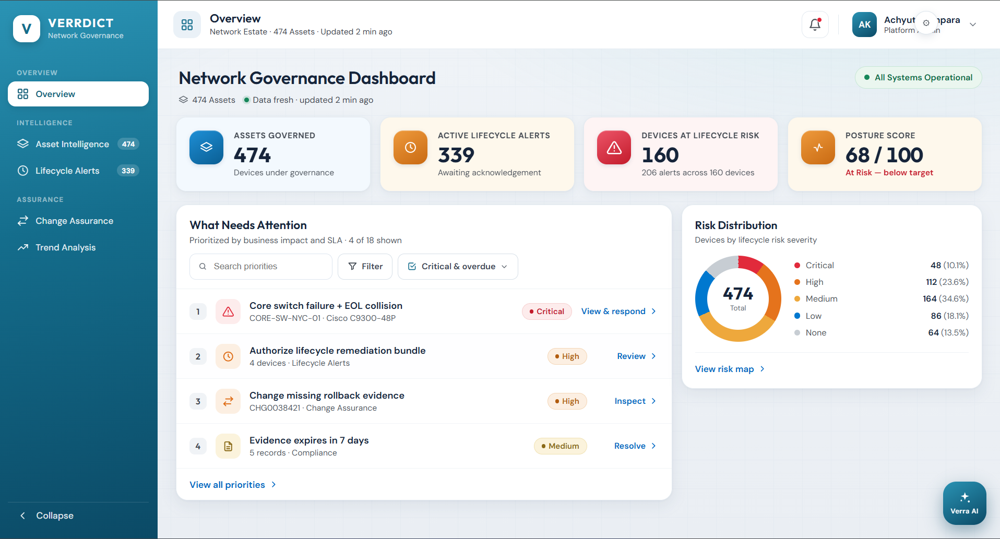

Everything in one view
Devices, risk and open decisions sit on one page.
CASE STUDY · NETWORK GOVERNANCE
Designing trust into network governance
A governance platform for a large financial company. It pulls scattered network checks into one place, so a reviewer can explain every decision they make.

PROBLEM
Vendor warnings, the asset inventory and change records lived in separate tools. People merged them by hand, so two reviewers could look at the same device and reach different conclusions.
MY ROLE
Sole designer. I owned the audit, interviews, structure, flows, interface, design system and handoff.
APPROACH
I audited the existing tool against fixed questions, grouped the findings into one problem, and designed every screen against four principles.
RESULT
Six modules and one component set, delivered inside a two-week window. The client received it well and it is moving toward adoption. There are no live usage numbers yet.
WHAT VERRDICT IS
Devices, risk and open decisions sit on one page.
Every status opens into the checks and records behind it.
Every number names its source and its age.
CONSTRAINTS
The design had to be buildable inside the sprint the team already had planned.
No research team, no second pair of hands. Every artefact here is mine.
New screens had to reuse the existing component set rather than start a new one.
The brief named the modules. The freedom was in how they behaved, not what shipped.
COLLABORATION
We were a team of eleven. I owned the design end to end and took requirements directly from the client. The project manager owned overall delivery.
Core group
1 UX designer (me), 1 subject matter expert, 1 project manager
Development
5 developers, who built the interface from my design system and specs
Delivery
1 chief delivery lead, who handled delivery oversight and client handoff
Sales and business
1 chief sales officer and 1 sales manager, who held the client relationship and requirements
When you can't see how a decision was made, every decision is a risk.
That sentence became the brief I held myself to. The rest of this page is how I designed against it.